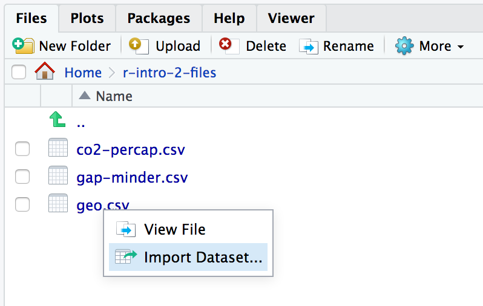
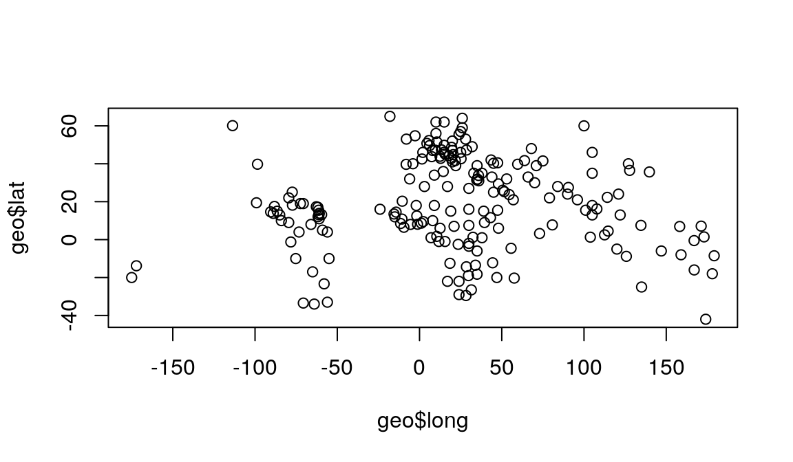
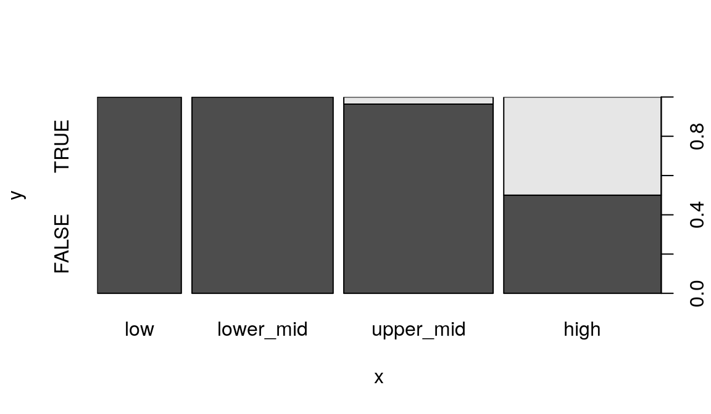

2 Data frames
Data frame is R’s name for tabular data. We generally want each row in a data frame to represent a unit of observation, and each column to contain a different type of information about the units of observation. Tabular data in this form is called “tidy data”.
Today we will be using a collection of modern packages collectively known as the Tidyverse. R and its predecessor S have a history dating back to 1976. The Tidyverse fixes some dubious design decisions baked into “base R”, including having its own slightly improved form of data frame, which is called a tibble. Sticking to the Tidyverse where possible is generally safer, Tidyverse packages are more willing to generate errors rather than ignore problems.
2.1 Setting up
Our first step is to download the files we need and to install the Tidyverse. This is the one step where we ask you to copy and paste some code:
# Download files for this workshop
download.file(
"https://monashdatafluency.github.io/r-intro-2/r-intro-2-files.zip",
destfile="r-intro-2-files.zip")
unzip("r-intro-2-files.zip")
# Install Tidyverse
install.packages("tidyverse")If using RStudio Cloud, you might need to switch to R version 3.5.3 to successfully install Tidyverse. Use the drop-down in the top right corner of the page.
People also sometimes have problems installing all the packages in Tidyverse on Windows machines. If you run into problems you may have more success installing individual packages.
We need to load the tidyverse package in order to use it.
The tidyverse package loads various other packages, setting up a modern R environment. In this section we will be using functions from the dplyr, readr and tidyr packages.
R is a language with mini-languages within it that solve specific problem domains. dplyr is such a mini-language, a set of “verbs” (functions) that work well together. dplyr, with the help of tidyr for some more complex operations, provides a way to perform most manipulations on a data frame that you might need.
2.2 Loading data
We will use the read_csv function from readr to load a data set. (See also read.csv in base R.) CSV stands for Comma Separated Values, and is a text format used to store tabular data. The first few lines of the file we are loading are shown below. Conventionally the first line contains column headings.
name,region,oecd,g77,lat,long,income2017
Afghanistan,asia,FALSE,TRUE,33,66,low
Albania,europe,FALSE,FALSE,41,20,upper_mid
Algeria,africa,FALSE,TRUE,28,3,upper_mid
Andorra,europe,FALSE,FALSE,42.50779,1.52109,high
Angola,africa,FALSE,TRUE,-12.5,18.5,lower_mid##
## ── Column specification ─────────────────────────────────────────────────────────────────────────────────────────────────────────────────────────────────────
## cols(
## name = col_character(),
## region = col_character(),
## oecd = col_logical(),
## g77 = col_logical(),
## lat = col_double(),
## long = col_double(),
## income2017 = col_character()
## )## # A tibble: 196 x 7
## name region oecd g77 lat long income2017
## <chr> <chr> <lgl> <lgl> <dbl> <dbl> <chr>
## 1 Afghanistan asia FALSE TRUE 33 66 low
## 2 Albania europe FALSE FALSE 41 20 upper_mid
## 3 Algeria africa FALSE TRUE 28 3 upper_mid
## 4 Andorra europe FALSE FALSE 42.5 1.52 high
## 5 Angola africa FALSE TRUE -12.5 18.5 lower_mid
## 6 Antigua and Barbuda americas FALSE TRUE 17.0 -61.8 high
## 7 Argentina americas FALSE TRUE -34 -64 upper_mid
## 8 Armenia europe FALSE FALSE 40.2 45 lower_mid
## 9 Australia asia TRUE FALSE -25 135 high
## 10 Austria europe TRUE FALSE 47.3 13.3 high
## # … with 186 more rowsread_csv has guessed the type of data each column holds:
<chr>- character strings<dbl>- numerical values. Technically these are “doubles”, which is a way of storing numbers with 15 digits precision.<lgl>- logical values,TRUEorFALSE.
We will also encounter:
<int>- integers, a fancy name for whole numbers.<fct>- factors, categorical data. We will get to this shortly.
You can also see this data frame referring to itself as “a tibble”. This is the Tidyverse’s improved form of data frame. Tibbles present themselves more conveniently than base R data frames. Base R data frames don’t show the type of each column, and output every row when you try to view them.
Tip
A data frame can also be created from vectors, with the tibble function. (See also data.frame in base R.) For example:
## # A tibble: 3 x 2
## foo bar
## <dbl> <chr>
## 1 10 a
## 2 20 b
## 3 30 cThe argument names become column names in the data frame.
Tip
The path to the file on our server is "r-intro-2-files/geo.csv". This says, starting from your working directory, look in the directory r-intro-2-files for the file geo.csv. The steps in the path are separated by /. Your working directory is shown at the top of the console pane. The path needed might be different on your own computer, depending where you downloaded the file.
One way to work out the correct path is to find the file in the file browser pane, click on it and select “Import Dataset…”.

2.3 Exploring
The View function gives us a spreadsheet-like view of the data frame.
View(geo)print with the n argument can be used to show more than the first 10 rows on the console.
We can extract details of the data frame with further functions:
## [1] 196## [1] 7## [1] "name" "region" "oecd" "g77" "lat"
## [6] "long" "income2017"## name region oecd g77
## Length:196 Length:196 Mode :logical Mode :logical
## Class :character Class :character FALSE:165 FALSE:65
## Mode :character Mode :character TRUE :31 TRUE :131
##
##
##
## lat long income2017
## Min. :-42.00 Min. :-175.000 Length:196
## 1st Qu.: 4.00 1st Qu.: -5.625 Class :character
## Median : 17.42 Median : 21.875 Mode :character
## Mean : 19.03 Mean : 23.004
## 3rd Qu.: 39.82 3rd Qu.: 51.892
## Max. : 65.00 Max. : 179.1452.4 Indexing data frames
Data frames can be subset using [row,column] syntax.
## # A tibble: 1 x 1
## region
## <chr>
## 1 europeNote that while this is a single value, it is still wrapped in a data frame. (This is a behaviour specific to Tidyverse data frames.) More on this in a moment.
Columns can be given by name.
## # A tibble: 1 x 1
## region
## <chr>
## 1 europeThe column or row may be omitted, thereby retrieving the entire row or column.
## # A tibble: 1 x 7
## name region oecd g77 lat long income2017
## <chr> <chr> <lgl> <lgl> <dbl> <dbl> <chr>
## 1 Andorra europe FALSE FALSE 42.5 1.52 high## # A tibble: 196 x 1
## region
## <chr>
## 1 asia
## 2 europe
## 3 africa
## 4 europe
## 5 africa
## 6 americas
## 7 americas
## 8 europe
## 9 asia
## 10 europe
## # … with 186 more rowsMultiple rows or columns may be retrieved using a vector.
## # A tibble: 3 x 7
## name region oecd g77 lat long income2017
## <chr> <chr> <lgl> <lgl> <dbl> <dbl> <chr>
## 1 Afghanistan asia FALSE TRUE 33 66 low
## 2 Algeria africa FALSE TRUE 28 3 upper_mid
## 3 Angola africa FALSE TRUE -12.5 18.5 lower_midVector indexing can also be written on a single line.
## # A tibble: 3 x 7
## name region oecd g77 lat long income2017
## <chr> <chr> <lgl> <lgl> <dbl> <dbl> <chr>
## 1 Afghanistan asia FALSE TRUE 33 66 low
## 2 Algeria africa FALSE TRUE 28 3 upper_mid
## 3 Angola africa FALSE TRUE -12.5 18.5 lower_mid## # A tibble: 7 x 7
## name region oecd g77 lat long income2017
## <chr> <chr> <lgl> <lgl> <dbl> <dbl> <chr>
## 1 Afghanistan asia FALSE TRUE 33 66 low
## 2 Albania europe FALSE FALSE 41 20 upper_mid
## 3 Algeria africa FALSE TRUE 28 3 upper_mid
## 4 Andorra europe FALSE FALSE 42.5 1.52 high
## 5 Angola africa FALSE TRUE -12.5 18.5 lower_mid
## 6 Antigua and Barbuda americas FALSE TRUE 17.0 -61.8 high
## 7 Argentina americas FALSE TRUE -34 -64 upper_mid2.5 Columns are vectors
Ok, so how do we actually get data out of a data frame?
Under the hood, a data frame is a list of column vectors. We can use $ to retrieve columns. Occasionally it is also useful to use [[ ]] to retrieve columns, for example if the column name we want is stored in a variable.
## [1] "asia" "europe" "africa" "europe" "africa" "americas"## [1] "asia" "europe" "africa" "europe" "africa" "americas"To get the “region” value of the 4th row as above, but unwrapped, we can use:
## [1] "europe"For example, to plot the longitudes and latitudes we could use:

Quiz: reading R code
You encounter some wild R code, and aren’t sure what it does. Based on R syntax you’ve encountered so far, what roles are the different names in this code playing?
highest <- geo$name[ head(order(geo$lat, decreasing=TRUE), n=10) ]Find all examples of:
A. The name of a variable to store a value to.
B. The name of a variable to retrieve the value from.
C. The name of a column to get from a data frame.
D. The name of a function to call.
E. The name of an argument to a function call.
See here for answers.
2.6 Logical indexing
A method of indexing that we haven’t discussed yet is logical indexing. Instead of specifying the row number or numbers that we want, we can give a logical vector which is TRUE for the rows we want and FALSE otherwise. This can also be used with vectors.
We will first do this in a slightly verbose way in order to understand it, then learn a more concise way to do this using the dplyr package.
Southern countries have latitude less than zero.
## [1] FALSE FALSE FALSE FALSE TRUE FALSE## [1] 40sum treats TRUE as 1 and FALSE as 0, so it tells us the number of TRUE elements in the vector.
We can use this logical vector to get the southern countries from geo:
## # A tibble: 40 x 7
## name region oecd g77 lat long income2017
## <chr> <chr> <lgl> <lgl> <dbl> <dbl> <chr>
## 1 Angola africa FALSE TRUE -12.5 18.5 lower_mid
## 2 Argentina americas FALSE TRUE -34 -64 upper_mid
## 3 Australia asia TRUE FALSE -25 135 high
## 4 Bolivia americas FALSE TRUE -17 -65 lower_mid
## 5 Botswana africa FALSE TRUE -22 24 upper_mid
## 6 Brazil americas FALSE TRUE -10 -55 upper_mid
## 7 Burundi africa FALSE TRUE -3.5 30 low
## 8 Chile americas TRUE TRUE -33.5 -70.6 high
## 9 Comoros africa FALSE TRUE -12.2 44.4 low
## 10 Congo, Dem. Rep. africa FALSE TRUE -2.5 23.5 low
## # … with 30 more rowsComparison operators available are:
x == y– “equal to”x != y– “not equal to”x < y– “less than”x > y– “greater than”x <= y– “less than or equal to”x >= y– “greater than or equal to”
More complicated conditions can be constructed using logical operators:
a & b– “and”, TRUE only if bothaandbare TRUE.a | b– “or”, TRUE if eitheraorbor both are TRUE.! a– “not” , TRUE ifais FALSE, and FALSE ifais TRUE.
The oecd column of geo tells which countries are in the Organisation for Economic Co-operation and Development, and the g77 column tells which countries are in the Group of 77 (an alliance of developing nations). We could see which OECD countries are in the southern hemisphere with:
## # A tibble: 3 x 7
## name region oecd g77 lat long income2017
## <chr> <chr> <lgl> <lgl> <dbl> <dbl> <chr>
## 1 Australia asia TRUE FALSE -25 135 high
## 2 Chile americas TRUE TRUE -33.5 -70.6 high
## 3 New Zealand asia TRUE FALSE -42 174 highis_southern seems like it should be kept within our geo data frame for future use. We can add it as a new column of the data frame with:
## # A tibble: 196 x 8
## name region oecd g77 lat long income2017 southern
## <chr> <chr> <lgl> <lgl> <dbl> <dbl> <chr> <lgl>
## 1 Afghanistan asia FALSE TRUE 33 66 low FALSE
## 2 Albania europe FALSE FALSE 41 20 upper_mid FALSE
## 3 Algeria africa FALSE TRUE 28 3 upper_mid FALSE
## 4 Andorra europe FALSE FALSE 42.5 1.52 high FALSE
## 5 Angola africa FALSE TRUE -12.5 18.5 lower_mid TRUE
## 6 Antigua and Barbuda americas FALSE TRUE 17.0 -61.8 high FALSE
## 7 Argentina americas FALSE TRUE -34 -64 upper_mid TRUE
## 8 Armenia europe FALSE FALSE 40.2 45 lower_mid FALSE
## 9 Australia asia TRUE FALSE -25 135 high TRUE
## 10 Austria europe TRUE FALSE 47.3 13.3 high FALSE
## # … with 186 more rowsChallenge: logical indexing
Which country is in both the OECD and the G77?
Which countries are in neither the OECD nor the G77?
Which countries are in the Americas? These have longitudes between -150 and -40.
2.6.1 A dplyr shorthand
The above method is a little laborious. We have to keep mentioning the name of the data frame, and there is a lot of punctuation to keep track of. dplyr provides a slightly magical function called filter which lets us write more concisely. For example:
## # A tibble: 3 x 8
## name region oecd g77 lat long income2017 southern
## <chr> <chr> <lgl> <lgl> <dbl> <dbl> <chr> <lgl>
## 1 Australia asia TRUE FALSE -25 135 high TRUE
## 2 Chile americas TRUE TRUE -33.5 -70.6 high TRUE
## 3 New Zealand asia TRUE FALSE -42 174 high TRUEIn the second argument, we are able to refer to columns of the data frame as though they were variables. The code is beautiful, but also opaque. It’s important to understand that under the hood we are creating and combining logical vectors.
2.7 Factors
The count function from dplyr can help us understand the contents of some of the columns in geo. count is also magical, we can refer to columns of the data frame directly in the arguments to count.
## # A tibble: 4 x 2
## region n
## * <chr> <int>
## 1 africa 54
## 2 americas 35
## 3 asia 59
## 4 europe 48## # A tibble: 4 x 2
## income2017 n
## * <chr> <int>
## 1 high 58
## 2 low 31
## 3 lower_mid 52
## 4 upper_mid 55One annoyance here is that the different categories in income2017 aren’t in a sensible order. This comes up quite often, for example when sorting or plotting categorical data. R’s solution is a further type of vector called a factor (think a factor of an experimental design). A factor holds categorical data, and has an associated ordered set of levels. It is otherwise quite similar to a character vector.
Any sort of vector can be converted to a factor using the factor function. This function defaults to placing the levels in alphabetical order, but takes a levels argument that can override this.
## [1] low upper_mid upper_mid high lower_mid high
## Levels: low lower_mid upper_mid highWe should modify the income2017 column of the geo table in order to use this:
count now produces the desired order of output:
## # A tibble: 4 x 2
## income2017 n
## * <fct> <int>
## 1 low 31
## 2 lower_mid 52
## 3 upper_mid 55
## 4 high 58When plot is given a factor, it shows a bar plot:
When given two factors, it shows a mosaic plot:

Similarly we can count two categorical columns at once.
## # A tibble: 6 x 3
## income2017 oecd n
## <fct> <lgl> <int>
## 1 low FALSE 31
## 2 lower_mid FALSE 52
## 3 upper_mid FALSE 53
## 4 upper_mid TRUE 2
## 5 high FALSE 29
## 6 high TRUE 292.8 Readability vs tidyness
The counts we obtained counting income2017 vs oecd were properly tidy in the sense of containing a single unit of observation per row. However to view the data, it would be more convenient to have income as columns and OECD membership as rows. We can use the pivot_wider function from tidyr to achieve this. (This is also sometimes also called a “cast” or a “spread”.)
## # A tibble: 2 x 5
## oecd low lower_mid upper_mid high
## <lgl> <int> <int> <int> <int>
## 1 FALSE 31 52 53 29
## 2 TRUE NA NA 2 29We could further specify values_fill=list(n=0) to fill in the NA values with 0.
Tip
Tidying is often the first step when exploring a data-set. The tidyr package contains a number of useful functions that help tidy (or un-tidy!) data. We’ve just seen pivot_wider which spreads two columns into multiple columns. The inverse of pivot_wider is pivot_longer, which gathers multiple columns into two columns: a column of column names, and a column of values. pivot_longer is often the first step when tidying a dataset you have received from the wild. (This is sometimes also called a “melt” or a “gather”.)
Challenge: counting
Investigate how many OECD and non-OECD nations come from the northern and southern hemispheres.
- Using
count. - By making a mosaic plot.
Remember you may need to convert columns to factors for plot to work, and that a southern column could be added to geo with:
2.9 Sorting
Data frames can be sorted using the arrange function in dplyr.
## # A tibble: 196 x 8
## name region oecd g77 lat long income2017 southern
## <chr> <chr> <lgl> <lgl> <dbl> <dbl> <fct> <lgl>
## 1 New Zealand asia TRUE FALSE -42 174 high TRUE
## 2 Argentina americas FALSE TRUE -34 -64 upper_mid TRUE
## 3 Chile americas TRUE TRUE -33.5 -70.6 high TRUE
## 4 Uruguay americas FALSE TRUE -33 -56 high TRUE
## 5 Lesotho africa FALSE TRUE -29.5 28.2 lower_mid TRUE
## 6 South Africa africa FALSE TRUE -29 24 upper_mid TRUE
## 7 Swaziland africa FALSE TRUE -26.5 31.5 lower_mid TRUE
## 8 Australia asia TRUE FALSE -25 135 high TRUE
## 9 Paraguay americas FALSE TRUE -23.3 -58 upper_mid TRUE
## 10 Botswana africa FALSE TRUE -22 24 upper_mid TRUE
## # … with 186 more rowsNumeric columns are sorted in numeric order. Character columns will be sorted in alphabetical order. Factor columns are sorted in order of their levels. The desc helper function can be used to sort in descending order.
## # A tibble: 196 x 8
## name region oecd g77 lat long income2017 southern
## <chr> <chr> <lgl> <lgl> <dbl> <dbl> <fct> <lgl>
## 1 Zimbabwe africa FALSE TRUE -19 29.8 low TRUE
## 2 Zambia africa FALSE TRUE -14.3 28.5 lower_mid TRUE
## 3 Yemen asia FALSE TRUE 15.5 47.5 lower_mid FALSE
## 4 Vietnam asia FALSE TRUE 16.2 108. lower_mid FALSE
## 5 Venezuela americas FALSE TRUE 8 -66 upper_mid FALSE
## 6 Vanuatu asia FALSE TRUE -16 167 lower_mid TRUE
## 7 Uzbekistan asia FALSE FALSE 41.7 63.8 lower_mid FALSE
## 8 Uruguay americas FALSE TRUE -33 -56 high TRUE
## 9 United States americas TRUE FALSE 39.8 -98.5 high FALSE
## 10 United Kingdom europe TRUE FALSE 54.8 -2.70 high FALSE
## # … with 186 more rows2.10 Joining data frames
Let’s move on to a larger data set. This is from the Gapminder project and contains information about countries over time.
## # A tibble: 4,312 x 5
## name year population gdp_percap life_exp
## <chr> <dbl> <dbl> <dbl> <dbl>
## 1 Afghanistan 1800 3280000 603 28.2
## 2 Albania 1800 410445 667 35.4
## 3 Algeria 1800 2503218 715 28.8
## 4 Andorra 1800 2654 1197 NA
## 5 Angola 1800 1567028 618 27.0
## 6 Antigua and Barbuda 1800 37000 757 33.5
## 7 Argentina 1800 534000 1507 33.2
## 8 Armenia 1800 413326 514 34
## 9 Australia 1800 351014 814 34.0
## 10 Austria 1800 3205587 1847 34.4
## # … with 4,302 more rowsQuiz
What is the unit of observation in this new data frame?
It would be useful to have general information about countries from geo available as columns when we use this data frame. gap and geo share a column called name which can be used to match rows from one to the other.
## # A tibble: 4,312 x 12
## name year population gdp_percap life_exp region oecd g77 lat long
## <chr> <dbl> <dbl> <dbl> <dbl> <chr> <lgl> <lgl> <dbl> <dbl>
## 1 Afghani… 1800 3280000 603 28.2 asia FALSE TRUE 33 66
## 2 Albania 1800 410445 667 35.4 europe FALSE FALSE 41 20
## 3 Algeria 1800 2503218 715 28.8 africa FALSE TRUE 28 3
## 4 Andorra 1800 2654 1197 NA europe FALSE FALSE 42.5 1.52
## 5 Angola 1800 1567028 618 27.0 africa FALSE TRUE -12.5 18.5
## 6 Antigua… 1800 37000 757 33.5 ameri… FALSE TRUE 17.0 -61.8
## 7 Argenti… 1800 534000 1507 33.2 ameri… FALSE TRUE -34 -64
## 8 Armenia 1800 413326 514 34 europe FALSE FALSE 40.2 45
## 9 Austral… 1800 351014 814 34.0 asia TRUE FALSE -25 135
## 10 Austria 1800 3205587 1847 34.4 europe TRUE FALSE 47.3 13.3
## # … with 4,302 more rows, and 2 more variables: income2017 <fct>,
## # southern <lgl>The output contains all ways of pairing up rows by name. In this case each row of geo pairs up with multiple rows of gap.
The “left” in “left join” refers to how rows that can’t be paired up are handled. left_join keeps all rows from the first data frame but not the second. This is a good default when the intent is to attaching some extra information to a data frame. inner_join discard all rows that can’t be paired up. full_join keeps all rows from both data frames.
2.11 Further reading
We’ve covered the fundamentals of dplyr and data frames, but there is much more to learn. Notably, we haven’t covered the use of the pipe %>% to chain dplyr verbs together. The “R for Data Science” book is an excellent source to learn more. The Monash Data Fluency “Programming and Tidy data analysis in R” course also covers this.